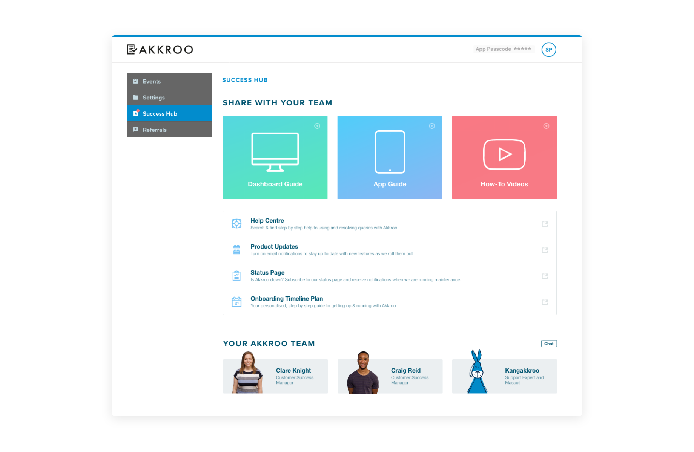
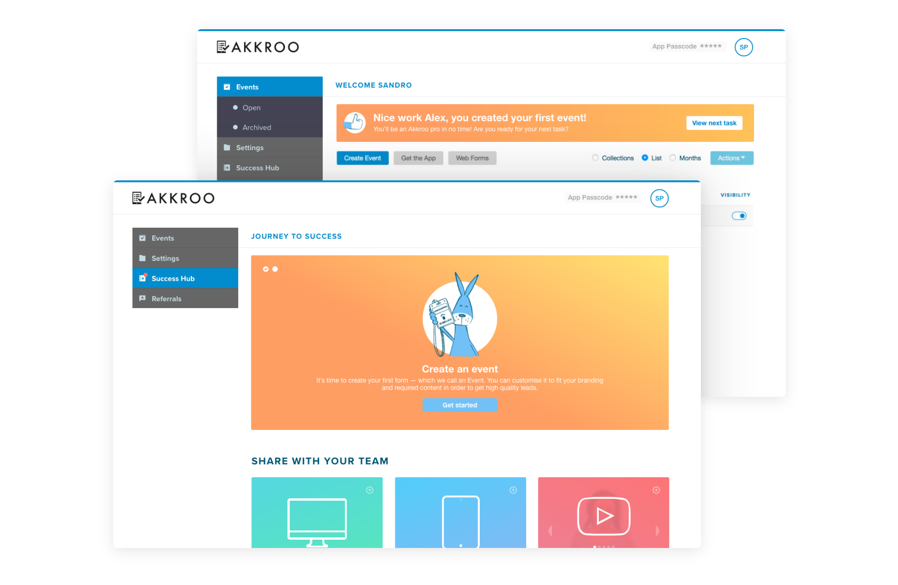

Q3 2017
Success Hub in the Akkroo Dashboard
Context
In early 2017, Akkroo had found its niche in the B2B market and was maturing as a product.
With the company focusing on building processes and providing a great customer experience, the onboarding for new customers was overwhelmingly positive, but most of the work was very manual and required the CS team to guide users through learning tasks and provide useful assets like guides and helpers via email.
With the aim to help automate this process in a scalable way, we decided to offload some of these responsibilities onto the product.
Problem
We framed this project around the user persona of the Marketing Manager — who we named Megan Marketing —, the typical user of the Akkroo dashboard.
Using the Jobs to Be Done framework, we arrived at the following goal:
As Megan Marketing, I want to be able to find any resource I need in order to use Akkroo successfully.
Discovery and ideation
To begin addressing this problem, we first worked very closely with the CS team in order to understand what the onboarding process usually entailed. With this exercise, we got to understand which resources were available, which ones customers found most useful, what training tasks they were asked to perform, and so on.
Having learnt that, we started laying out the elements in the page, paying close attention to the prioritisation of the information.
For new customers, we designed a system of helpful steps and tips — starring Akkroo’s mascot, Kangakkroo — in order to help guide them though the platform while performing various tasks.
Other gamification aspects — like achievement badges — were discussed and considered in order to incentivise the completion of all the onboarding tasks, but were eventually dropped due to the limited resources and deadline commitments.

As my first big project with the Akkroo Dashboard, I was keen to spend some time making sure we provided a delightful experience through the use of fun microinteractions. These were implemented by me using a combination of animations created using After Effects and rendered on the web using Lottie.
Video
Outcome
The Success Hub proved successful (no pun intended) by offloading some of the very manual tasks from our CS team, freeing them to spend more time providing a great experience to our customers.
Value added:
- Dashboard users became less dependent on the CS team to access content and receive training.
- Successful proof of concept for using Lottie to implement more intricate interactions.
Room for improvement:
- Most gamification elements were not implemented due to limited resources.